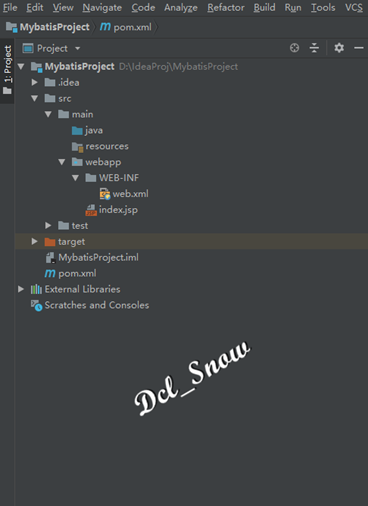
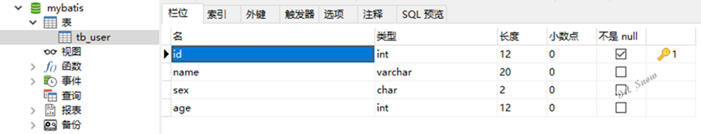
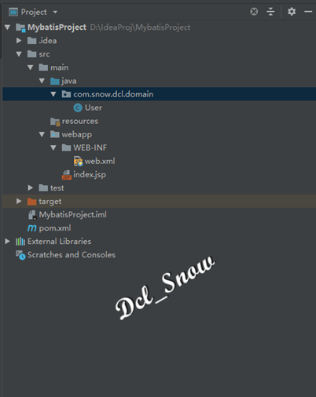
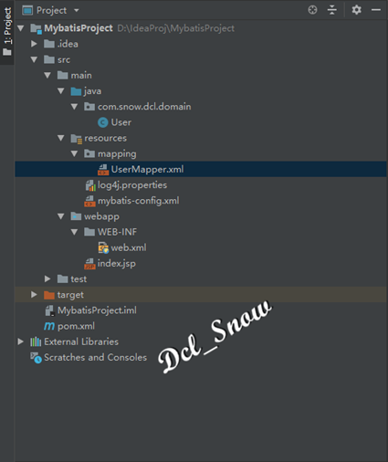
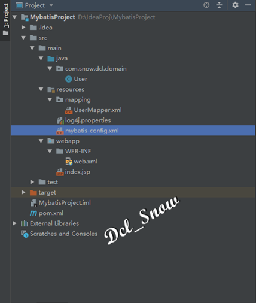
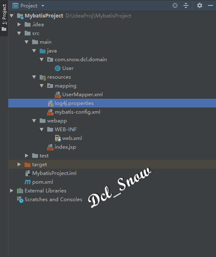
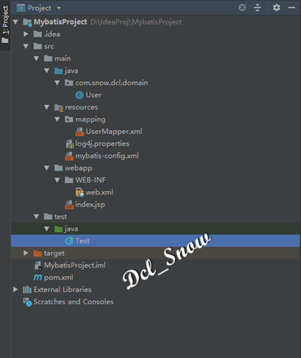
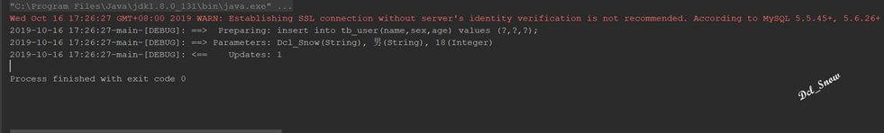
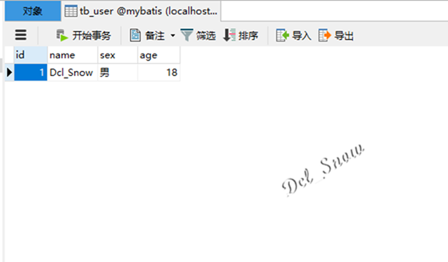

概述
Mybatis是Apache的一个开源项目iBatis，2010年改名为Mybatis。
Mybatis是一个支持普通SQL查询、存储过程和高级映射的优秀持久层框架，对jdbc操作数据库的过程进行封装，使开发者只需要关注SQL本身，而不需要花费精力去处理注册驱动、创建connection等jdbc繁杂的过程代码。
Mybatis通过xml或者注解的方式将要执行的各种statement配置起来，并通过java对象（POJO）和statement中的sql进行映射生成最终执行的sql语句，然后由Mybatis框架执行sql并将结果映射成java对象（POJO）并返回。
MyBatis作为持久层框架，其主要思想是将程序中的大量SQL语句剥离出来，配置在配置文件中，以实现SQL的灵活配置。优势是将SQL与程序代码分离，做到可以在不修改程序代码的情况下，直接在配置文件中修改SQL。
MyBatis的使用非常简单，只要在Java项目中添加相关依赖，就能以面向对象的方式操作关系数据库。
创建项目
创建项目的步骤此处不再赘述，与SpringMVC创建相同（前文链接：https://www.jianshu.com/p/fde4557c527c）。
项目目录结构如图：

打开项目的pom文件，添加Mybatis包依赖和连接MySQL数据库的包依赖：
1 <dependency>
2 <groupId>org.mybatis</groupId>
3 <artifactId>mybatis</artifactId>
4 <version>3.4.6</version>
5 </dependency>
6 <dependency>
7 <groupId>mysql</groupId>
8 <artifactId>mysql-connector-java</artifactId>
9 <version>5.1.46</version>
10 </dependency>
创建数据库
MySQL数据库的安装前文已经记录，此处不再赘述（前文连接：https://www.jianshu.com/p/b96e55e86c98）。
使用客户端连接数据库，创建一个名为mybatis的数据库，使用该数据库，创建一张名为tb_user的表，id为主键自动增长：

前文介绍，ORM框架是使用持久化对象完成持久化操作，即通过该对象对数据库进行增、删、改的操作，以面向对象的方式操作数据库。
在Mybatis中使用的持久化对象就是PO对象（持久化后的POJO），它不要求持久化类继承任何父类或者实现任何接口，保证代码不被污染，这是Mybatis被称为低侵入式设计的原因。
在项目中创建POJO类
在项目中的java目录下创建com.snow.dcl.domain包，在该包下创建User.java类：

编写如下代码：
1 public class User {
2
3 //用户id
4 private Integer id;
5
6 //用户名称
7 private String name;
8
9 //用户性别
10 private String sex;
11
12 //用户年龄
13 private Integer age;
14
15 public Integer getId() {
16 return id;
17 }
18
19 public void setId(Integer id) {
20 this.id = id;
21 }
22
23 public String getName() {
24 return name;
25 }
26
27 public void setName(String name) {
28 this.name = name;
29 }
30
31 public String getSex() {
32 return sex;
33 }
34
35 public void setSex(String sex) {
36 this.sex = sex;
37 }
38
39 public Integer getAge() {
40 return age;
41 }
42
43 public void setAge(Integer age) {
44 this.age = age;
45 }
46
47 //无参构造方法
48 public User() {
49 }
50
51 //带参构造方法
52 public User(Integer id, String name, String sex, Integer age) {
53 this.id = id;
54 this.name = name;
55 this.sex = sex;
56 this.age = age;
57 }
58
59 @Override
60 public String toString() {
61 return "User{" +
62 "id=" + id +
63 ", name='" + name + '\'' +
64 ", sex='" + sex + '\'' +
65 ", age=" + age +
66 '}';
67 }
68 }
创建XML文件
现在对于Mybatis来说还不理解User.java类与数据库表tb_user的关系，也不理解类中的属性与数据库表各个字段的关系，要通过XML文件完成两者之间的映射关系，使得Mybatis能够理解和使用。
在项目中的resources目录下创建mapping目录，在该目录下创建UserMapper.xml文件：

编写如下代码：
1 <?xml version="1.0" encoding="UTF-8"?>
2 <!DOCTYPE mapper PUBLIC "-//mybatis.org//DTD Mapper 3.0//EN"
3 "http://mybatis.org/dtd/mybatis-3-mapper.dtd">
4 <mapper namespace="com.snow.dcl.mapper.UserMapper">
5 <insert id="saveUser" parameterType="com.snow.dcl.domain.User" useGeneratedKeys="true">
6 insert into tb_user(name,sex,age) values (#{name},#{sex},#{age});
7 </insert>
8 </mapper>
在XML文件中定义了一条insert语句，解释如下：
1.<mapper namespace="com.snow.dcl.mapper.UserMapper">为该mapper定义了唯一的userspace，习惯上该值设置为包名+sql映射文件名，这样可以保证该值唯一。
2.insert标签中编写了插入sql语句，id属性值设置为saveUser，该值必须唯一。
3.parameterType属性指定了插入数据时使用的参数类型，这里插入的数据就是User对象。
4.useGeneratedKeys="true"表示使用数据库的自动增长策略。
配置Mybatis
现在对于Mybatis来说，理解了User.java类与数据库表tb_user的关系，但是还不知道需要连接的数据库地址、用户名、密码、连接池等信息，所以项目要对Mybatis的配置文件进行这些信息的配置。
Mybatis的配置文件默认为mybatis-config.xml，应用程序运行时，需要先加载该文件。
在项目的resources目录下创建mybatis-config.xml文件：

编写如下代码：
1 <?xml version="1.0" encoding="UTF-8"?>
2 <!DOCTYPE mapper PUBLIC "-//mybatis.org//DTD Mapper 3.0//EN"
3 "http://mybatis.org/dtd/mybatis-3-mapper.dtd">
4 <mapper namespace="com.snow.dcl.mapper.UserMapper">
5 <insert id="saveUser" parameterType="com.snow.dcl.domain.User" useGeneratedKeys="true">
6 insert into tb_user(name,sex,age) values (#{name},#{sex},#{age});
7 </insert>
8 </mapper>
1.<configuration>是Mybatis配置文件的根元素。
2.<settings>子元素配置了日志信息，可以在控制台打印输出语句，便于调试，对Mybatis配置日志信息很重要。
3.<environments>子元素用来配置Mybatis的环境，用来将SQL映射用于多种数据库之中。每个数据库对应一个SqlSessionFactory，可以配置多种环境，但是只能为SqlSessionFactory实例选择一个环境，default属性表示选择的环境。
4.<environment>用于配置一个环境；<transactionManager>用来配置Mybatis中的事务管理，type设置为JDBC，表示直接使用JDBC的提交和回滚设置；<dataSource>用来配置数据源，Mybatis中并不推荐使用DriverManager来连接数据库，推荐使用数据源来管理数据库连接，这样能保证最好的性能；<property>用于配置Mybatis连接数据库的包必要信息，驱动、URL、用户名、密码等。
5.<mappers>子元素支持多个<mapper>子元素，每个<mapper>用于指定一个持久化配置文件。
数据源：
数据源是一种用来提高数据库连接性能的常规手段，它会负责维持一个数据库连接池，当程序创建数据源实例时，系统会一次性的创建多个数据库连接，并把这些数据库连接保存在连接池中。当程序需要进行数据库访问时，无需重新获得数据库连接，直接从连接池中取出一个空闲的数据库连接，当程序使用数据库连接访问数据库结束后，无须管理数据库连接，而是将数据库连接归还给连接池即可。通过这种方式可以避免频繁的获取和关闭数据库连接导致性能下降。
配置LOG4J日志
Mybatis的配置文件中配置了日志信息，所以在此要对日至框架LOG4J进行配置。
首先在项目的pom文件中添加LOG4J的依赖：
1 <?xml version="1.0" encoding="UTF-8"?>
2 <!DOCTYPE mapper PUBLIC "-//mybatis.org//DTD Mapper 3.0//EN"
3 "http://mybatis.org/dtd/mybatis-3-mapper.dtd">
4 <mapper namespace="com.snow.dcl.mapper.UserMapper">
5 <insert id="saveUser" parameterType="com.snow.dcl.domain.User" useGeneratedKeys="true">
6 insert into tb_user(name,sex,age) values (#{name},#{sex},#{age});
7 </insert>
8 </mapper>
在项目的resources目录下创建log4j.properties文件：

编写如下内容：
1 #全局的日志配置
2 log4j.rootLogger=ERROR, stdout
3 #Mybatis的日志配置
4 log4j.logger.com.snow.dcl.mapper.UserMapper=DEBUG
5 #控制台输出
6 log4j.appender.stdout=org.apache.log4j.ConsoleAppender
7 log4j.appender.stdout.layout=org.apache.log4j.PatternLayout
8 log4j.appender.stdout.layout.ConversionPattern=%-d{yyyy-MM-dd HH\:mm\:ss}-%t-[%p]\: %m%n
测试
在test目录的java目录下创建测试Java类文件Test.java：

编写如下代码：
1 public class Test {
2 public static void main(String[] args) throws IOException {
3 InputStream inputStream = Resources.getResourceAsStream("mybatis-config.xml");
4 SqlSessionFactory sqlSessionFactory = new SqlSessionFactoryBuilder().build(inputStream);
5 SqlSession sqlSession = sqlSessionFactory.openSession();
6 User user = new User("Dcl_Snow","男",18);
7 sqlSession.insert("com.snow.dcl.mapper.UserMapper.saveUser",user);
8 sqlSession.commit();
9 sqlSession.close();
10 }
11 }
执行结果：

查看数据库表数据：

Mybatis的持久化操作过程
1.开发持久化类PO和编写持久化操作的Mapper.xml，在其中定义要执行的SQL语句。
2.获取SqlSessionFactory。
3.获取SqlSession。
4.用面向对象的方式操作数据库。
5.关闭事务，关闭SqlSession。
{kind=link}
{kind=link}
{kind=link}
{kind=link}
{kind=link}
{kind=link}
{kind=link}
{kind=link}
{kind=link}